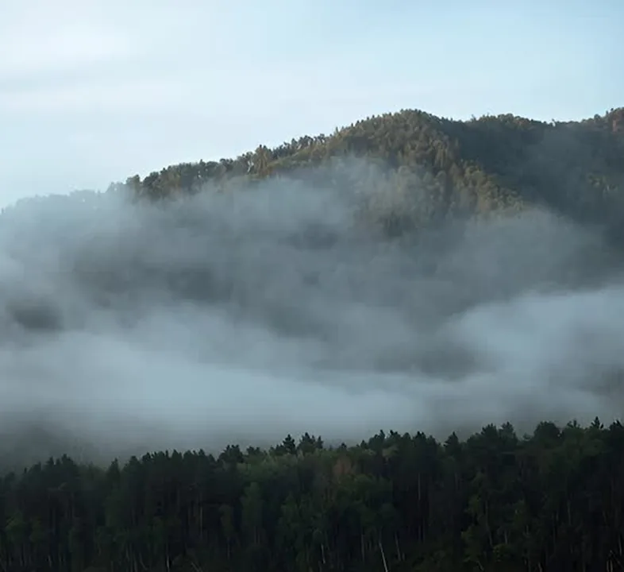
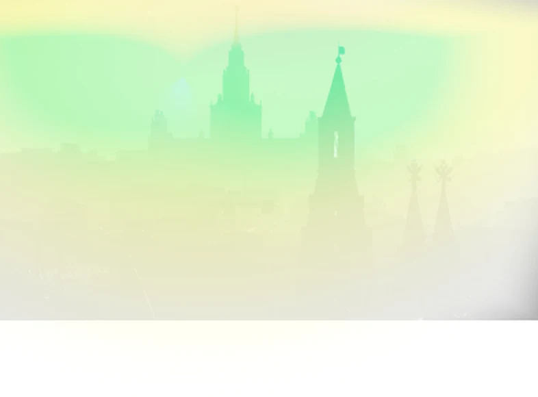
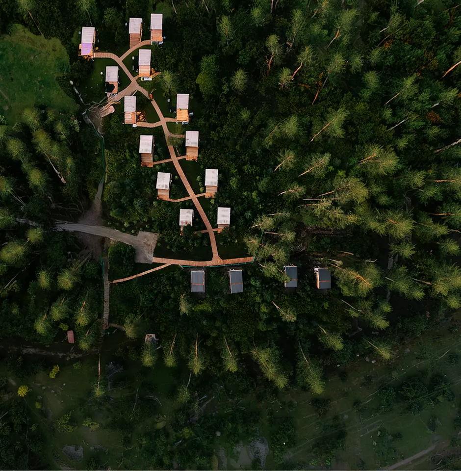
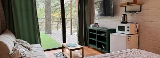
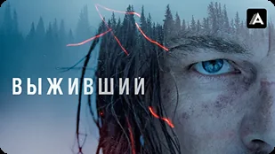
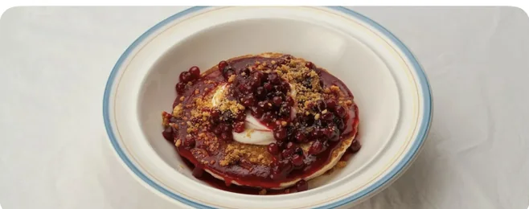
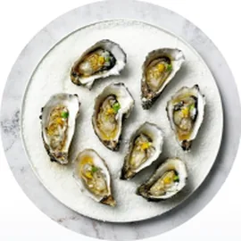
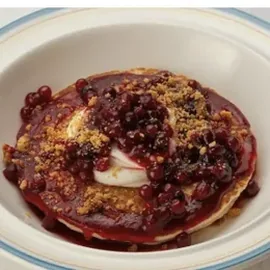

Санкт-Петербург
4–6 июля · 2 человека
14–17 августа · 2 гостя

Сейчас
Собрать план поездки под вас?
Зарегистрировать на рейс?
Заезд

Бунгало с террасой
Устроить ранний заезд?
Что взять с собой в дорогу
Что посмотреть в дороге
 САНКТ-ПЕТЕРБУРГ, РОССИЯ | 39 лучших достопримечательностей Петербурга
САНКТ-ПЕТЕРБУРГ, РОССИЯ | 39 лучших достопримечательностей Петербурга
7.2 6.4
6.4 7.9
7.9
Собрать завтрак-боксы к выезду?
23°
Утро
Prosa Breakfast Bar
Завтрак в тихой кофейне во дворе с авторской выпечкой

Забронировать стол
Сходим на конную прогулку?
Новая Голландия
Атмосферное место для шоппинга и прогулок с детьми
 на территории отеля
на территории отеляДень
Тропа к роднику
Ровная тропа через кедровник к холодному роднику
Новая Голландия
Атмосферное место для шоппинга и прогулок с детьми
на территории отеля
Затопить баню перед костром?
Вечер
Как насчет роллов вечером?
Subzero
Стильный минималистичный ресторан на улице Рубинштейна
на территории отеля
Важная Рыба
Популярная доставка и суши-бары с большим выбором блюд ресторанного уровня
доставка
Gills
Уютное японское кафе на Казанской улице
Birch
Авторская русская кухня, переосмысленная через локальные продукты и сезонные ингредиенты

Устрицы с юдзу
690 ₽
Крем-брюле с мисо
890 ₽

Сырники с брусникой
640 ₽

Ролл с лососем
720 ₽
Тартар из тунца
890 ₽

Сет «Вечерний»
1 890 ₽
Закат
Собрал идеи, с которых провожать закат в разы приятнее
21:31

Крыша на Казанской
Открытый вид на Исаакий, вход по записи
21:31Стрелка Васильевского
Классическая точка на закат, 15 минут пешком
Мост Ломоносова
Тихая набережная почти без туристов
Аудиогид
0:00